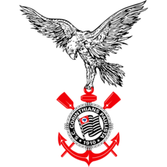

Show do Coringão
Teste de Conhecimentos sobre o Corinthians
Iniciar
Pergunta 1
Quem foi o artilheiro do Corinthians no Campeonato Brasileiro de 1990?
Sócrates
Careca
Branquinho
Ronaldo
Pergunta 2
Quem foi o primeiro presidente do Corinthians e em que ano ele assumiu?
Paulo Machado de Carvalho, 1910
José Ramos, 1912
Alberto Dualib, 1993
Joaquim dos Santos, 1914
Pergunta 3
Qual é o nome do estádio onde o Corinthians manda seus jogos e qual foi o ano de sua inauguração?
Estádio do Morumbi, 1960
Arena da Baixada, 2014
Arena Corinthians, 2014
Estádio do Pacaembu, 1940
Pergunta 4
Em que ano o Corinthians conquistou seu primeiro título mundial da FIFA e quem foi o adversário na final?
2005, Liverpool
2000, Vasco da Gama
1999, Manchester United
2012, Chelsea
Pergunta 5
Qual foi o resultado da final do Campeonato Paulista de 1977, que marcou a quebra de um jejum de títulos do clube?
Corinthians 1 x 0 Palmeiras
Corinthians 3 x 1 São Paulo
Corinthians 0 x 0 Palmeiras (vitória nos pênaltis)
Corinthians 2 x 1 Ponte Preta
Próxima Pergunta
Você acertou
de 5 perguntas!
Recomeçar